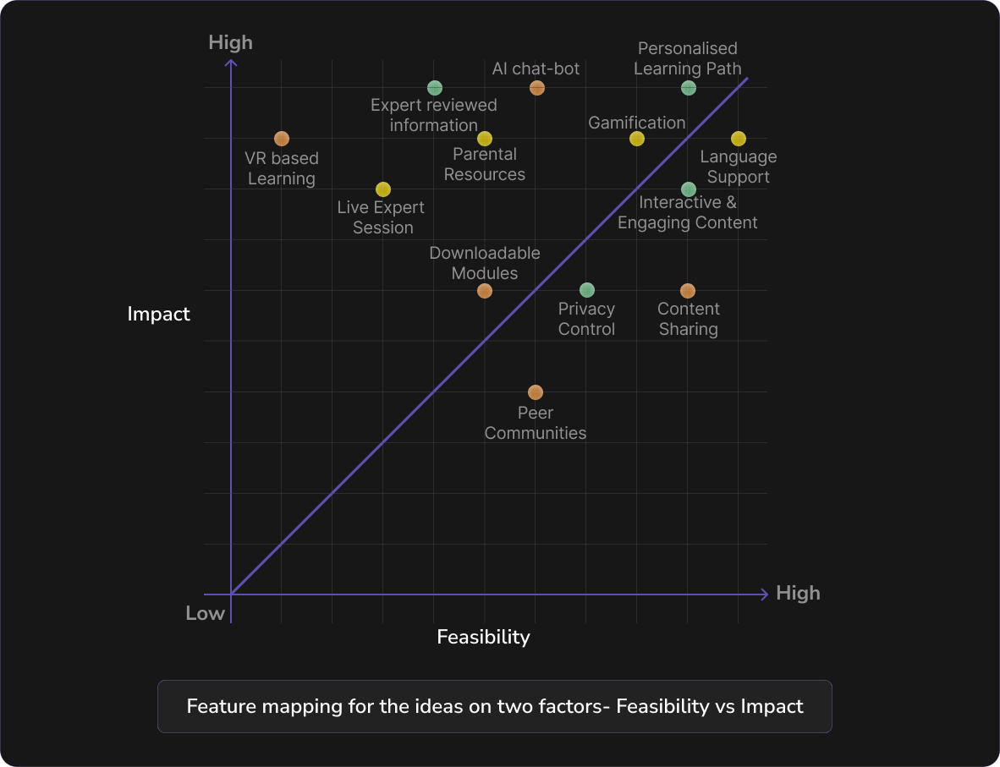
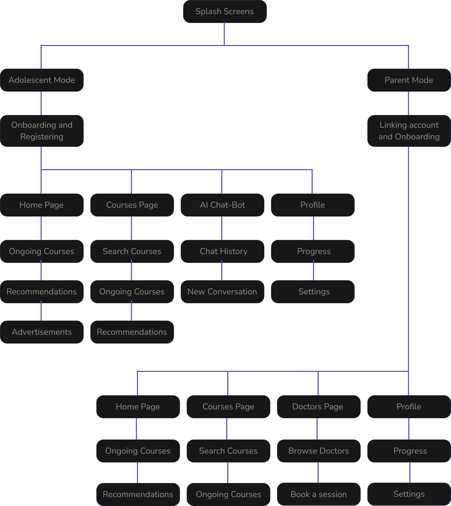
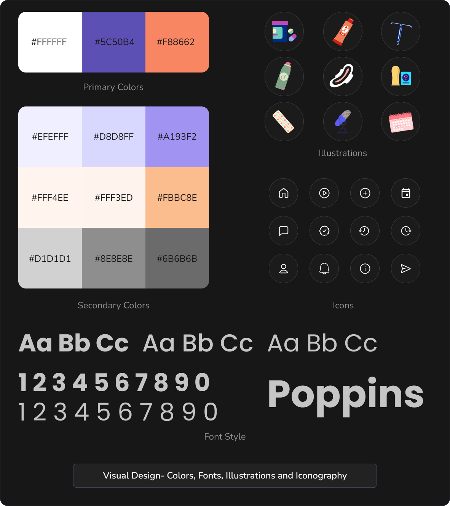

Children felt that sex education provided in schools was a one-size-fit-all solution.
~“The syllabus doesn’t mention much about the topic”

There is a strong lack of awareness of Sex education, along with a gap in the impartment of comprehensive sex education in schools, colleges, and other institutions in the country to adolescents.

A wide range of age-appropriate content curated and sourced directly from doctors and health professionals, ensuring that children receive accurate and reliable information.
A wide range of age-appropriate content curated and sourced directly from doctors and health professionals, ensuring that children receive accurate and reliable information.
A wide range of age-appropriate content curated and sourced directly from doctors and health professionals, ensuring that children receive accurate and reliable information.

The first step was understanding the crucial aspects of the topic were important to set a right base structure for the project and identify crucial insights that summarize the secondary research
Sex education is high-quality Teaching and Learning about various topics related to sex and sexuality.
Sex education ideally should be imparted during a student's development ages from 13 to 21.
Sex education is provided in Schools/Colleges to spread awareness and educate youngsters.
Imparting sex education early helps children make Healthier Decisions.
Teenagers face discomfort during discussions regarding sex and sexuality with parents or elders.
Lack of awareness, and overall need and how sex education can be beneficial for teenagers.
Importance of receiving sex education at an early age is paramount and leads to a safe lifestyle.
Source: Books, Magazines, Research Papers, Internet Articles
We circulated a google form to understand surface-level problems and pain points related to the secondary research conducted. The following were some key highlights through the quantitative analysis.
Out of 40 adolescents, 62% users said that they had received sex education in school/colleges but
only 20% of users found it to be useful.
The remaining 42% that received sex education in school/colleges admitted to the quality being
poor, average or below par.
Apart from schools/colleges & parents, adolescents admitted to gaining Sex Ed from other mediums like
parents, peers, digital & print media.
The user analysis provided adequate in-depth insights that were beneficial to map and identify stakeholders involved in this process to solve needs for and understand the flow of information.
The age between 13-21, called Adolescents are the main target audience to cater to.
The main influences involved in an adolescent's life are Parents and Doctors who initiate conversations.
Interview Type:
One-on-One
(Remote + Offline)
Avg Duration:
45 minutes
Stakeholders:
Adolescents
Total Participants:
40 Users (25 Females, 15 Males)
Stakeholders:
Parents/Guardians
Total Participants:
10 Parents
Stakeholders:
Medical Professionals
Total Participants:
15 Doctors
Children felt that sex education provided in schools was a one-size-fit-all solution.
~“The syllabus doesn’t mention much about the topic”
Parents have concerns regarding the age- appropriateness of the content available on the internet.
~“The internet is filled with content unsafe for my child”
Parents & Doctors felt there was a mistrust in the secondary sources of sex education for their children.
~“Children ask children for information about sensitive subjects”
Children felt that learning methodologies were too traditional for a sensitive topic like this
~“The sessions conducted are just a regular presentation deck with an anonymous Q and A”
Parents feel that there is ambiguity in the timing of sex education learnings
~“I am not sure when is the right age and time to discuss this with my child”
Doctors observe that there is a lack of consensus on the content, what should be included
~“There is no set curriculum or syllabus with regards to sex education”
Teenagers say they have a general curiosity about the topic and fear being judged in an open conversation
~“I am curious but ashamed to ask doubts during seminars”
Some parents showed concerns which were rooted in cultural, or societal beliefs.
~”The subject is a very sensitive and delicate”
Doctors observed the lack of resources available for training of teachers and professionals .
~”There aren’t a lot of credible sources to refer to”
Children preferred to talk to secondary sources (friends or social media) over parents and health professionals.
~”I’d rather ask the internet over people. They might judge me”
Parents felt shy and less prepared while imparting knowledge to teenagers.
~”I am not sure what I am supposed to say to my child”
doubts and queries regarding sex education
uncomfortable about asking these questions to parents or doctors
uses the internet and social media for finding relative information
ends up consuming invalid information
Generalized content & one-size-fit method of teaching is used, which are ineffective.
Fear of Judgment makes teenagers reluctant to ask doubts or questions to adults.
Secondary sources of information lack credibility & age-appropriateness, that can be misleading.
Safety and anonymity are key to creating an effective & accessible environment.
Lack of accessible, credible sources of sex education and sexual health for teenagers.
How might we ensure a way for users to directly access age appropriate and credible sex education related information to ensure effective learning?
How might we ensure a way for users to directly access age appropriate and credible sex education related information to ensure effective learning?
With all the defined how might we’s, our group decided to affinity map ideas on a broader level to define the possible outcomes that can be executed for the topic.
On the basis of the above mentioned ideas brainstormed by the team, we created an user desirability vs feasibility graph to understand which idea would suit the problem the best.
An app would be accessible due to widespread use smartphones and growing internet availability.
An app could offer a safe, anonymous platform, encouraging engagement without fear or stigma.
An app can facilitate tailored content to individual needs and allow users to learn at their own pace.
To further progress on the selected idea, our team used the MOSCOW technique to ideate and brainstorm in features and concepts to be integrated on the platform.
To be able to provide a meaningful product to our stakeholders, we feature mapped the concepts on the basis of two most relevant factors through our research. An impact (i.e. how they will consume the content) vs feasibility (i.e. depending on external factors) graph is presented below.
With all the defined how might we’s, our group decided to affinity map ideas on a broader level to define the possible outcomes that can be executed for the topic.

A wide range of age-appropriate content, curated and sourced directly from doctors and health professionals, ensuring that children receive accurate and reliable information.
A wide range of age-appropriate content, curated and sourced directly from doctors and health professionals, ensuring that children receive accurate and reliable information.
A wide range of age-appropriate content, curated and sourced directly from doctors and health professionals, ensuring that children receive accurate and reliable information.
Figma Link: Mil Jayegi
With all the defined how might we’s, our group decided to affinity map ideas on a broader level to define the possible outcomes that can be executed for the topic.
Due to time constraints, User Testing could not be conducted.
During my 6-month design research project centered on developing an application to teach sex education to teenagers in India, I gained valuable insights and key learnings. Here are some of the important takeaways and skills I developed: